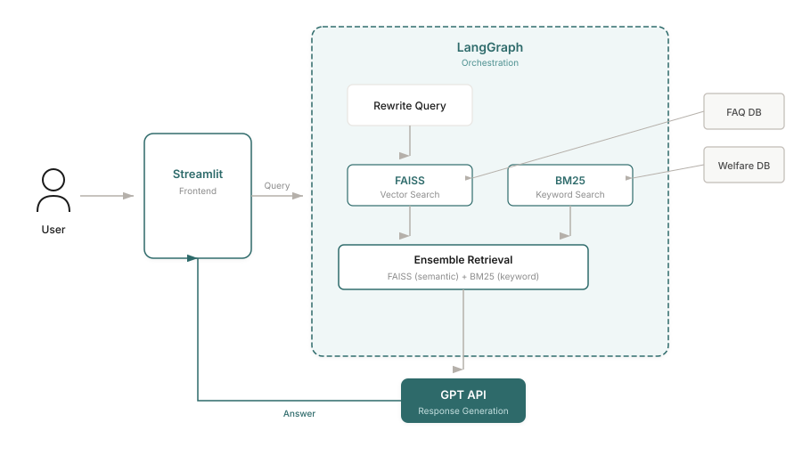
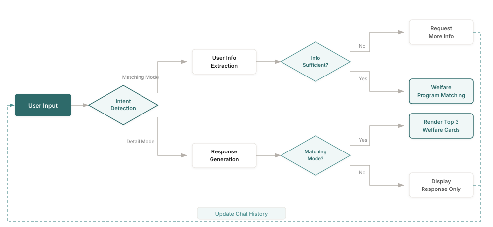

Seoul offers over 300 welfare programs for its citizens, yet a significant portion of eligible residents never receive the benefits they qualify for. The information is scattered across multiple platforms, buried in complex eligibility criteria, and written in bureaucratic language that's difficult to parse.
Welfare Compass
A conversational AI agent that helps Seoul citizens discover welfare benefits they're eligible for through natural dialogue.
Seoul AI Hackathon — Top 20 / 181 teams
The Problem
86%
give up thinking "I'm probably not eligible"
48%
of eligible citizens don't receive benefits
30+ min
average time to search for relevant policies
Existing Solutions Fall Short
Platforms like Seoul Talk and Bokjiro simply list links without automatic condition matching. Users must manually check each policy's requirements.
Information Overload
With 300+ policies, each with complex eligibility criteria involving age, income, employment status, and residency requirements, citizens face decision paralysis.
I reframed the problem: "How can we make scattered, complex welfare information easily searchable through natural language conversation?"
Solution Overview
Welfare Compass is a conversational AI agent that extracts user profile information through natural dialogue and matches it against a comprehensive welfare policy database using RAG (Retrieval-Augmented Generation).
Instead of requiring users to fill out forms or navigate complex menus, they simply describe their situation: "I'm a 28-year-old freelancer living in Gangnam, looking for housing support." The system automatically extracts relevant attributes and finds matching welfare programs.
System Architecture
I designed a RAG-based architecture using LangGraph for workflow orchestration. The key insight was that welfare policies are frequently updated, so we needed a system that could incorporate changes through document updates alone — without model retraining.

System Architecture: User query flows through Streamlit to LangGraph, which orchestrates query rewriting, ensemble retrieval (FAISS + BM25), and GPT response generation.

Conversation Flow: The system detects user intent, extracts profile information through dialogue, and matches against welfare eligibility criteria.
Tech Stack
Python
LangGraph
LangChain
FAISS
BM25
GPT API
Streamlit
Key Challenges & Solutions
Low retrieval accuracy with vector search alone
Initial tests showed that semantic search (FAISS) missed relevant policies when user queries used different terminology than the policy documents.
Ensemble retrieval with BM25
Combined vector similarity search with BM25 keyword matching. This hybrid approach captured both semantic meaning and exact keyword matches, significantly improving retrieval accuracy.
Inconsistent and hard-to-understand responses
Early feedback indicated that responses lacked consistency and used technical welfare terminology that users couldn't understand.
Iterative prompt engineering
Redesigned prompts to ensure responses were grounded only in retrieved documents. Experimented extensively with converting bureaucratic language to everyday expressions. Tested against real user question patterns to refine response quality.
Team alignment under time pressure
After advancing to finals, team members wanted to build out backend/frontend infrastructure. With limited time remaining, this risked delivering an incomplete product.
MVP-first approach with clear prioritization
Advocated for "working MVP over perfect architecture." Built Streamlit-based prototype overnight, demonstrated its viability to the team, and aligned everyone around completing a functional product rather than an ambitious but incomplete system.
Results & Feedback
Good topic and planning — this seems like something citizens could actually use right away.
— Hackathon Judge Panel
The project advanced to the finals, placing in the top 20 among 181 competing teams. Beyond the competition result, the judges specifically noted the practical applicability of the service and its potential for real-world impact.
Reflection & Learnings
- User context matters more than technical sophistication. Understanding why people give up on welfare searches (complexity, self-doubt about eligibility) shaped every design decision.
- Constraints force clarity. The tight hackathon timeline forced us to identify what truly mattered: a working system that could demonstrate the core value proposition.
- RAG is powerful for frequently-updated domains. Welfare policies change constantly. Choosing RAG over fine-tuning meant we could incorporate policy updates through simple document refresh.
- Hybrid retrieval outperforms single approaches. Combining semantic search with keyword matching addressed the vocabulary mismatch between user queries and policy documents.
Future Directions
The hackathon MVP validated the core concept, but there's significant room for improvement: migrating from Streamlit to a production React frontend, expanding coverage from Seoul youth to all Seoul citizens, and building partnerships with welfare service providers for real-time eligibility verification.